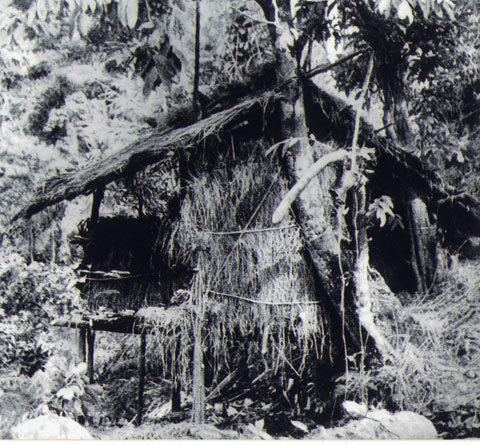

Từng dấu chân, một khát vọng
Bốn chặng đường lịch sử
Năm 1920 là bước ngoặt tìm thấy con đường cứu nước. Những năm tiếp theo là quá trình truyền bá tư tưởng, xây dựng tổ chức và chuẩn bị trở về lãnh đạo cách mạng.
Tất cả dấu mốc

Tiếp nối hành trình · Tháng 5/1941
Từ đường về đến con đường giành độc lập
Sau khi về nước, Nguyễn Ái Quốc chủ trì Hội nghị Trung ương VIII tại Pác Bó (10–19/5/1941). Hội nghị đặt nhiệm vụ giải phóng dân tộc lên hàng đầu và quyết định thành lập Mặt trận Việt Minh.
Đây là bước tiếp nối quan trọng của quá trình tìm đường, chuẩn bị lực lượng và trực tiếp lãnh đạo cách mạng trong nước.
Đọc tư liệu của Bảo tàng Lịch sử Quốc gia ↗Đọc và đối chiếu
Nguồn tư liệu chính thức
Nội dung được tóm lược từ các nguồn dưới đây, đối chiếu ngày 06/10/2026. Mỗi mốc có liên kết riêng; chú thích ảnh phân biệt ảnh tư liệu, tài liệu và ảnh di tích chụp về sau.